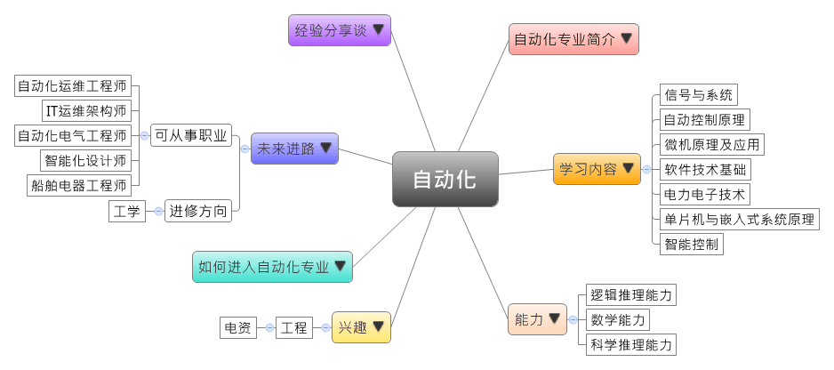
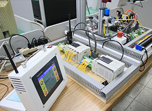
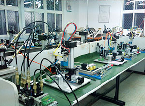

- 专业大观园
-

- 专业介绍
-
什么是自动化专业？
时代进步，自动化控制成为趋势，自动化常应用于日常生活与工业上，如：冷气机的温度控制、广告灯的变化控制、交通号志的时序控制、电梯的楼层控制及工厂生产的自动化控制等，皆需运用自动化技术。
自动化专业利用微处理机整合电子、电机与油气压动力元件，以计算机晶片取代人为控制。随着时代进步，自动化成为必然趋势，培养自动化装置能力的人才也成为首要任务。
本专业根据目前的就业需求，同时培养学生对于提供能源的“供用电系统”以及监控供用电系统的“电气控制设备”，让学生能更熟练练习规划、安装、运行与维修技能，培养电气工程师。
 可编程控制器 
 自动控制实习工厂 名词小辞典－可编程控制器又称PLC，它使用可编程的存储器，存储编程产生的指令，借以执行用户的指令，并控制各类机械的生产过程。
- 学习内容
-
自动化专业学生主要学习以下四种学科：控制科学、计算机技术、电子技术和机械工程，自动化为集以上四项学科为一体的综合性学科。
本专业依学校，欲培养的人才不同而有三个发展方向：一是工业过程控制，针对工作生产过程，实现自动化控制；二是电气工程方向，提供学生电力系统、电气控制等组成课程；三是嵌入系统方向，著重对嵌入式系统设计与软件设计的能力培养。自动化专业主干课程有：信号与系统、自动控制原理、微机原理及应用、软件技术基础、电力电子技术、单片机与嵌入式系统原理、智能控制……等；另有实践教学环节如生产实习、电子工艺实习，以及专业实验如自动检测与仪表实验、控制系统仿真实验等。
本专业可以习得的知识与获得之能力、技能列点：第一，掌握本专业如电路、电子技术、控制理论和信息处理等技术基础理论知识；第二，具备本专业三种发展方向至少1-2种的知识技能，并了解产业发展现状；第三，习得较佳的系统分析、设计与开发的训练技能。
- 能力
-
自动化专业学生，需具备以下能力：
相关性向能力 说明 逻辑推理能力
数学能力 应用各种数位逻辑闸设计电路
应用各种数位逻辑闸设计电路
装配及应用电子电路的能力
设计可程式控制器的控制指令并绘制基本流程图科学推理能力 熟悉并正确使用各式控制元件
安装、操作、测试及维修各种控制系统
- 兴趣
-
若你对下列活动或事物有高度兴趣，可考虑进入自动化专业学习：
工程 电资 实际做出成品
讲究具体和实用性
需要手眼协调的活动
按照正确步骤操作精密仪器
运用科学原理及准则进行产品制作，并解决过程中遭遇问题
- 如何进入此专业
-
下面列举开设自动化专业重点大学院校：
- 未来进路
-
可从事职业
自动化专业学生毕业后，就业领域相当广泛。在各科技公司、设计单位、工矿企业、金融/通信系统相关、交通运输产业、发电厂等，从事与电子信息有关的工作，如系统运行、自动控制、信息处理或计算机技术应用等等工作内容；有些则会从事软件开发、电路设计；又或是销售与专业领域相关产品的工作。在工作职场上皆能发挥自动控制技术、设备维护等专长：
行业 职业 电路信息、科技公司 自动化运维工程师、自动化测试工程师、自动化工程师、自动化开发工程师、IT运维架构师、产品架构工程师、自动化销售工程师、机械自动化工程师、自动化技术员、售后工程师、售前工程师、网络工程师 工矿企业 自动化工程师 电力电气公司、电厂 自动化电气工程师、自动化产品工程师、自动化工程师、楼宇自动化工程师、电力预算员 建筑、建材工程 智能化设计师、楼宇自动化工程师、弱电智能设计师、店气自动化工程师、运维工程师、弱电维护员 交通运输 船舶电器工程师、自动化工程师、机械自动化工程师 政府单位（含海关） 公务员 进修方向以下列举自动化专业毕业生可以继续修读之学科门类及一级学科：
学科门类 一级学科 硕士点 工学 控制科学与工程控制理论与控制工程、检测技术与自动化装置、系统工程、模式识别与智能系统、导航、制导与控制 工程（专业硕士）控制工程 注：工程专业硕士报考资格
工程专业硕士报考资格1.大学本科毕业后，有3年以上工作经验
2.获得国家承认的高职高专毕业学历后，有5年以上工作经验
3.已获硕士学位或博士学位，有2年以上工作经验
- 经验分享谈
-
青岛特锐德电气股份有限公司董事长——于德翔
青岛特锐德电气股份有限公司是中德合资的股份制企业,国家级高新技术企业。由于德翔与团队在2004年共同创立，现已成为中国最大的箱变研发、生产基地，完全实现工业化、工艺化、专业化、规模化生产箱变的企业，并于2009年10月成功上市，成为创业板第一股。
于德翔毕业于华北电力大学硕士学位，后成为高级工程师，主要研究电力方向。大学毕业的于德翔最先进入了河北省邯郸市的河北电力设备厂，工作热情，方法灵活，善于学习，又从不墨守成规，很快他便被提拔为副厂长。但于德翔从不是一个“安分”的人，心中的梦想始终在鞭策着他，最终他走上了下海创业的道路。从国企干部到上市公司董事长，于德翔创业的同时又不忘学习，几十年的职业生涯中，一直从事着电力系统和箱式变电站的研发生产，本人参与的技术专利包括短信定位故障装置，一体化配电装置，齿轮齿条式隔离开关等多项。
从最初的团队创业到最终的上市，特锐德的规模不断扩大，现已成为箱式变电站的龙头企业。总结其成功经验，于德翔认为首先是运气，选择合适的时候进入合适的市场，所以获得成功；第二他认为是企业团队风险预警心态，时时刻刻考虑如何规避风险，未雨绸缪，才能掌握成功的诀窍。作为企业的领路人，于德翔重视企业文化的管理，创新、信任、学习、执行、负责是他强调的词汇，在新能源领，他已经带领特锐德开始积极布局，谋求更大发展。【资料来源：喬妮、丁雯. 特锐德董事长于德翔：创业板第一股的产业理想[EB/OL].】